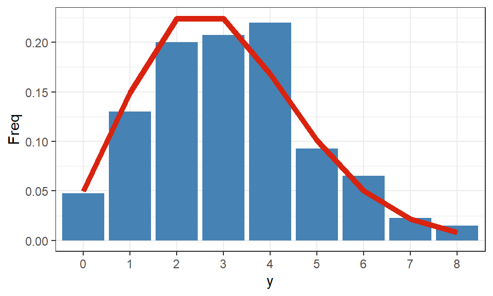

model <- multinom(species ~ bill_length_mm, data = penguins)12 Andra länkfunktioner
På samma sätt som logitlänken kan användas för att transformera den linjära regressionsmodellen till en logistisk regressionsmodell när vi vill anpassa en binär responsvariabel kan andra länkfunktioner användas om responsvariabeln är av en annan typ eller följer en annan skala.
12.1 Multinomial logistisk regression
Om responsvariabeln är kategorisk men innehåller fler än två klasser kan vi utöka den logistiska regressionsmodellen till att hantera flera kategorier. Multinomial eller polytom logistisk regression används om responsvariabeln följer nominalskala, alltså kategorier som inte går att rangordna.
Binär logistisk regression modellerar \(\pi = P(Y = 1)\) vilket också innebär att vi på ett enkelt sätt får \(P(Y = 0)\) med hjälp av komplementregeln, \(1 - \pi\). Nu när vi har \(J\) kategorier av responsvariabeln kan måste vi modellera flera sannolikheter för att täcka alla möjliga utfall. Summan av dessa sannolikheter måste bli 1 då de beskriver sannolikhetsfördelningen av Y.
\[ \begin{aligned} P(Y = 0|\mathbf{X}) \quad P(Y=1|\mathbf{X}) \quad \dots \quad P(Y=J-1|\mathbf{X}) \end{aligned} \] Vi kan därefter anpassa \(J-1\) olika logitlänkar där samma referenskategori, ofta \(P(Y = 0)\), används för respektive “binära” jämförelser:
\[ \begin{aligned} \frac{P(Y=1|\mathbf{X})}{P(Y = 0|\mathbf{X})} \quad \frac{P(Y=2|\mathbf{X})}{P(Y = 0|\mathbf{X})} \quad \dots \end{aligned} \]
12.1.1 Modellanpassning
I R kan vi modellera en multinomial logistisk modell med multinom från paketet nnet. Anta att vi vill anpassa en modell som beskriver hur olika egenskaper kan prediktera pingviners art.
Visa kod
summary(model) %>%
coef() %>%
kable(digits = 3, caption = "Modellens skattade koefficienter.")| (Intercept) | bill_length_mm | |
|---|---|---|
| Chinstrap | -55.766 | 1.266 |
| Gentoo | -49.258 | 1.143 |
Eftersom att flera parameterskattningar fås för varje jämförelse kan utskrifter väldigt snabbt bli svåra att läsa av. Varje rad beskriver de tillhörande parametrarna för den angivna kategorin jämfört med referensgruppen, i detta fall Adelie-pingviner.
Utskriften innehåller väldigt bristande information och vi behöver beräkna inferens manuellt efteråt med hjälp av Wald-test.
Visa kod
# Beräknar testvariabeln (Wald-test)
z <- summary(model)$coefficients/summary(model)$standard.errors
# Beräknar dubbelsidiga p-värden
p <- (1 - pnorm(abs(z), 0, 1)) * 2
p %>%
kable(digits = 14, caption = "p-värden för respektive parameter i modellen.")| (Intercept) | bill_length_mm | |
|---|---|---|
| Chinstrap | 1.00e-14 | 4.00e-14 |
| Gentoo | 1.13e-12 | 1.57e-12 |
För att tolka parameterskattningarna som oddskvoter behöver vi transformera de med hjälp av \(e^{\hat{\beta}_j}\).
En mer detaljerad genomgång av denna sorts modell kan hittas här.
12.2 Ordinal logistisk regression
Ifall responsvariabeln har en ordning på sina kategorier kan vi, om lämpligt, använda ordinal logistisk regression istället där ordningen bibehålls även i modellen.
Vi kan anta att oddskvoterna är proportionella oavsett vilka kategorier av responsvariabeln som vi jämför, att oddset förändras lika mycket mellan kategori 1 och 0 som kategori 2 och 1. \[ \begin{aligned} Odds_g &= \frac{P(D \ge g|\mathbf{X})}{1 - P(D \ge g|\mathbf{X})} \end{aligned} \]
Alla lutningsparametrar \(\beta_j\) är samma för alla kategorier, men interceptet \(\beta_{0g}\) är olika för varje jämförelse.
En mer detaljerad genomgång hur denna sorts modell anpassas i R ges här.
12.3 Poissonregression
Även om responsvariabeln är kvantitativ behöver inte alltid den linjära regressionsmodellen vara lämplig att använda, till exempel om responsvariabeln beskriver ett diskret antal kommer den linjära modellen längre anpassa rätt fördelning. Fördelen med de generaliserade linjära modellerna är att vi nu har tillgång till flexibla metoder som kan anpassa andra fördelningar av Y|X som är mer lämpliga att beskriva responsvariabelns form. Givet att responsvariabeln beskriver ett antal med en majoritet låga värden kan Poissonfördelningen vara en lämplig fördelning för modellanpassningen.
Tips
Poissonfördelningen beskriver en diskret variabel, eller närmare bestämt en variabel som beskriver ett antal. Fördelningens form styrs utav dess väntevärde (\(\lambda\)) som också är dess varians. Vi kan skapa ett slumpmässigt urval från en Poissonfördelning i R med hjälp av rpois().
Visa kod
# Anger väntevärdet
lambda <- 3
# Anger antalet observationer som ska slumpas fram
nobs <- 400
# Anger ett seed
set.seed(12345)
# Drar ett urval från den angivna fördelningen
y <- rpois(n = nobs, lambda = lambda)Den sanna Poisson-fördelningen med samma väntevärde kan beräknas utifrån dpois(). Vi kan visualisera det slumpmässiga urvalet tillsammans med den sanna fördelningen på följande sätt:
Visa kod
# Beräknar sannolikheter för de givna utfallen av y utifrån det angivna lambda
trueFreq <- dpois(x = 0:max(y), lambda = lambda)
# Skapar ett datamaterial för visualisering
visData <-
data.frame(
table(y)/sum(table(y)),
trueFreq = trueFreq
)
# Visualiserar fördelningen och urvalet
ggplot(visData) + aes(x = y, y = Freq) +
# Skapar grunden med stapel-/stolpdiagrammet
geom_bar(stat = "identity", fill = "steelblue") +
# Lägger till den sanna fördelningen som en linje
geom_line(aes(y = trueFreq, group = 1), linewidth = 2, color = "#d9230f") +
theme_bw()
Vi kan ändra värden på både lambda och nobs för att se hur det slumpmässiga urvalet förhåller sig till den sanna fördelningen.
På samma sätt som tidigare modeller vill vi anpassa \(E[Y|X]\) alltså väntevärdet av responsvariabelns fördelning, vilket i detta fall är \(\lambda\). Vi vill fortfarande använda den linjära modellen på något sätt och vi kan därför använda loglänken för att transformera den linjära modellen till Poissonfördelningens väntevärde.
Låt oss anta att vi vet en sann Poissonmodell med en förklarande variabel som använder sig av länkfunktionen. \[ \begin{aligned} \ln(\lambda_i) = \beta_0 + \beta_1 \cdot X_i \end{aligned} \]
Anta att de sanna populationsparametrarna är \(\beta_0 = 1\) och \(\beta_1 = 0.5\). Den sanna lutningsparametern tolkas därför som att när \(X\) ökar med en enhet, ökar \(Y\) med ungefär \(e^{\beta_1} = e^{0.5} = 1.65\) gånger (eller ca \(65\) procent). Vi kan i R ange och skapa den sanna modellen via:
Visa kod
# Anger sanna värden för parametrarna i modellen
beta0 <- 1
beta1 <- 0.5
# Anger hur många observationer som populationen innehåller
nobs <- 200
# Anger ett seed
set.seed(42)
# Slumpar fram populationen av den *förklarande* variabeln utifrån angivna
# min/max begränsningar
x <- runif(n = nobs, min = 0, max = 5)
# Skapar populationens sanna lambda givet den modell som definierats
lambdaTrue <- exp(beta0 + beta1*x)
# Drar ett slumpmässigt urval för varje enhet givet dess väntevärde
y <- rpois(n = nobs, lambda = lambdaTrue)Objektet lambdaTrue innehåller nu populationens sanna väntevärden och vi kan använda dessa för att dra ett slumpmässigt urval av Y för respektive observation. Detta blir en liknande process som när vi drar ett slumpmässigt urval från en Poissonfördelning med ett angivet väntevärde men när vi nu har mer information om observationerna, mer specifikt deras förklarande variabler utgår vi från \(Y_i | X_i \sim Po(\lambda_i)\) där varje observation har ett specifikt värde på \(X\), och därav får ett eget väntevärde \(\lambda_i\). Detta motsvarar att vi i den linjära modellen antar att \(Y_i | X_i \sim N(\mu_i)\) och vi modellerar ett väntevärde på \(Y\) beroende på det angivna värdet på den förklarande variabeln.
Vi kan anpassa en Poissonmodell och visa de anpassade parametrarna:
Visa kod
# Anpassar Poissonmodellen
model <- glm(y ~ x, family = "poisson")
summary(model) %>%
coef() %>%
kable(digits = 3, caption = "Modellens skattade koefficienter.", col.names = c("Variabel", "Skattning", "Medelfel", "z-värde", "p-värde"))| Variabel | Skattning | Medelfel | z-värde | p-värde |
|---|---|---|---|---|
| (Intercept) | 0.870 | 0.064 | 13.541 | 0 |
| x | 0.527 | 0.017 | 30.756 | 0 |
Viktigt
Likt för logistisk regression kommer denna modell anpassas med hjälp av optimering och vi måste därför säkerställa att modellen konvergerat. R producerar varnings- eller felmeddelanden när detta inte sker, så var uppmärksam!
Den anpassade lutningsparametern tolkas som att när X ökar med en enhet ökar Y med \(e^{0.527} = 1.694\) gånger, eller ungefär 69.4 procent.
12.3.1 Inferens
Om vi vill jämföra en skattad koefficient med det sanna värdet (som vi i detta fall vet om), bör vi intervallskatta koefficienten och i detta fall kan vi se om det sanna värdet täcks av intervallet. Som alla andra konfidensintervall använder vi samma grundstruktur: \(\text{punktskattning} \pm \text{tabellvärde} \cdot \text{medelfel}\). För ‘stora’ urval antar vi att ML skattningarna är approximativt normalfördelade1 vilket innebär att tabellvärdet i intervallskattningen tas från den standardiserade normalfördelningen. Både punktskattningen och medelfelet kan hittas i koefficienttabellen. \[ \begin{aligned} \hat{\beta} \pm Z_{1-\alpha/2} \cdot S_{\hat{\beta}} \end{aligned} \]
För att tolka detta intervall behöver det transformeras med \(e^{x}\) på samma sätt som vi transformerar koefficienten för att tolka den. Vanligtvis brukar man därför beräkna: \[ \begin{aligned} e^{\hat{\beta} \pm Z_{1-\alpha/2} \cdot S_{\hat{\beta}}} \end{aligned} \]
För den anpassade modellen får vi följande intervall: \[ \begin{aligned} e^{0.52711 - 1.96 \cdot 0.01714} \le &e^{\beta_1} \le e^{0.52711 + 1.96 \cdot 0.01714}\\ e^{0.4935179} \le &e^{\beta_1} \le e^{0.5607021}\\ 1.638 \le &e^{\beta_1} \le 1.752 \end{aligned} \] Med 95 procents säkerhet täcker intervallet 1.64 till 1.75 den sanna procentuella förändringen på Y när X ökar med en enhet.
12.3.2 Prediktioner
Anta att de 200 observationer som vi simulerade tidigare i detta kapitel innehåller information om sambandet mellan produktionstiden (\(X\)) i timmar för 1000 leksaker och antalet defekta leksaker (\(Y\)) som identifierats efter produktionen slutförts. Varje observation beskriver en produktion av 1000 leksaker där sannolikheten att producera en defekt leksak är väldigt låg och antalet leksaker som produceras är många. Detta är per definition en Poissonfördelad variabel. Vi vill nu kunna använda den anpassade modellen för att prediktera hur många defekta leksaker som vi kan förvänta oss givet en viss produktionstid.2
På samma sätt som när vi vill tolka \(\beta\) måste prediktioner transformeras utifrån länk-funktionen för att vi ska kunna tolka dem. Vi kan beräkna en prediktion från modellen enligt: \[
\begin{aligned}
\lambda_i = e^{\hat{\beta}_0 + \hat{\beta}_1 \cdot X^*}
\end{aligned}
\] där \(X^*\) är antalet timmar produktionen har tagit och vi vill prediktera. predict() i R beräknar prediktioner utifrån en angiven modell, men vi måste för modeller som använder sig utav länkfunktioner ange vilken form vi vill beräkna prediktionen.
Visa kod
# Generar log(lambda)
predict(model, type = "link") %>%
head() %>%
kable(digits = 3, caption = "Modellens anpassade log(lambda).")| x |
|---|
| 3.281 |
| 3.340 |
| 1.624 |
| 3.059 |
| 2.561 |
| 2.238 |
Visa kod
# Generar lambda
predict(model, type = "response") %>%
head() %>%
kable(digits = 3, caption = "Modellens anpassade väntevärde.")| x |
|---|
| 26.603 |
| 28.211 |
| 5.074 |
| 21.300 |
| 12.953 |
| 9.376 |
Ytterligare ett argument i denna funktion är newdata. Om inte detta argument anges får vi endast ut anpassade värden för datamaterialet som modellen anpassats för.
Visa kod
# Skapar ny data
newData <- data.frame(x = 4)
# Genererar prediktioner på den nya observationen
pred <- predict(model, newdata = newData, type = "response")Med hjälp av den anpassade modellen, och argumentet type = "response", kan vi säga att vi förväntar oss att om det tar 4 timmar att tillverka 1000 leksaker så kommer ca 20 stycken vara defekta.
12.4 Referenser
Kleinbaum, D. G., L. L. Kupper, A. Nizam, och E. S. Rosenberg. 2013. Applied Regression Analysis and Other Multivariable Methods. Cengage Learning. https://books.google.se/books?id=v590AgAAQBAJ.